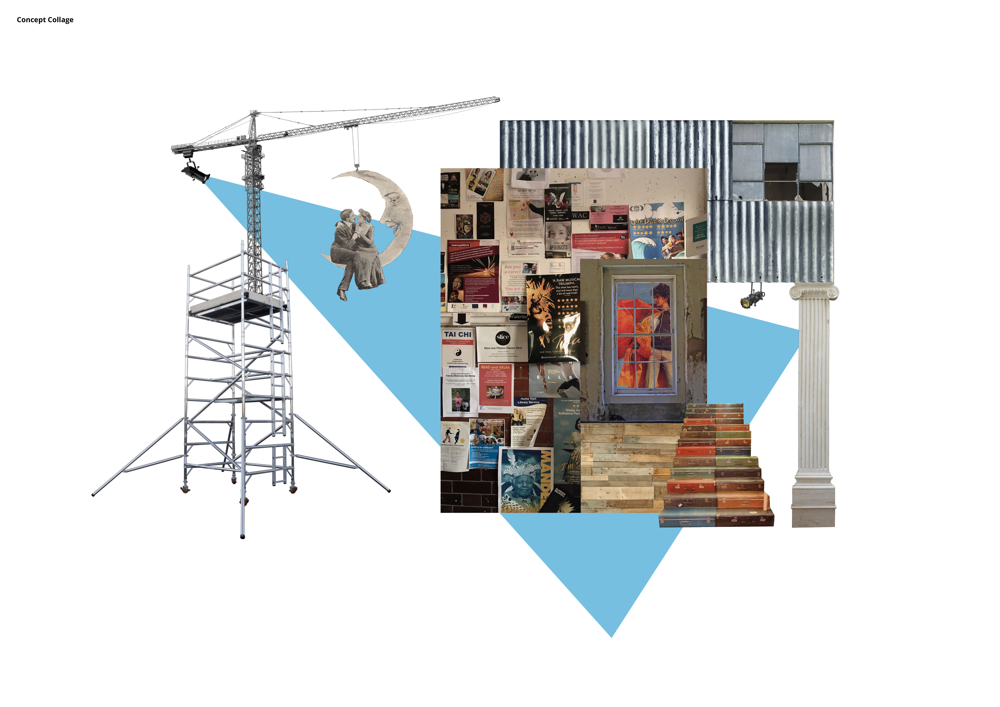

Theatre Set Recycling Centre



Waterloo Theatre Set Reusing/Upcycling Centre
The brief was to design a 21st Century ‘Inn-Yard Playhouse’ for London: a social hub that offers short-term living quarters for at least two people, whilst providing a platform for small-scale performance.
This project consists of a studio and living space for a set designer who runs a theatre sets community reusing/upcycling workshop.
The site is located in the Lower Marsh area - a vibrant and varied market street to the south of Waterloo Station - backstage to London’s Southbank - where people of all backgrounds come to eat, drink, trade perform and share ideas. This area has a high traffic of pedestrians and vehicles, which would increase the visibility of the project.
The proximity of the site to a variety of theatres would facilitate the donation process, as well as reduce the carbon footprint involved in transporting these props and structures. Heavier objects could be transported via an existing underground system that leads to the site or be lowered down by a crane located next to it. The materials donated by nearby theatres would be part of the make-up of the building itself, as well as being utilised by the workshop users.
A core steel grid structure would provide circulation and storage across all floors of the building. A pulley system, reminiscent of theatre backstages, would allow objects to be moved between floors. The metal structure would be in keeping with the industrial aspects of Waterloo, but also act as an “industrial counterpart” to the neighbouring Victorian buildings.
The floors dedicated to the community workshop and theatre performances would be visible and easily accessible to the public, while the living and studio spaces would maintain their privacy.
Once a year, a community theatre festival would be held on the premises. The main entrance and donations area on the ground floor would open up and transform into a stage, where the public could gather around to watch the plays, taking over sidewalks and streets.
This project consists of a studio and living space for a set designer who runs a theatre sets community reusing/upcycling workshop.
The site is located in the Lower Marsh area - a vibrant and varied market street to the south of Waterloo Station - backstage to London’s Southbank - where people of all backgrounds come to eat, drink, trade perform and share ideas. This area has a high traffic of pedestrians and vehicles, which would increase the visibility of the project.
The proximity of the site to a variety of theatres would facilitate the donation process, as well as reduce the carbon footprint involved in transporting these props and structures. Heavier objects could be transported via an existing underground system that leads to the site or be lowered down by a crane located next to it. The materials donated by nearby theatres would be part of the make-up of the building itself, as well as being utilised by the workshop users.
A core steel grid structure would provide circulation and storage across all floors of the building. A pulley system, reminiscent of theatre backstages, would allow objects to be moved between floors. The metal structure would be in keeping with the industrial aspects of Waterloo, but also act as an “industrial counterpart” to the neighbouring Victorian buildings.
The floors dedicated to the community workshop and theatre performances would be visible and easily accessible to the public, while the living and studio spaces would maintain their privacy.
Once a year, a community theatre festival would be held on the premises. The main entrance and donations area on the ground floor would open up and transform into a stage, where the public could gather around to watch the plays, taking over sidewalks and streets.